소환사 전적 검색과 매치 분석
Riot API 기반으로 최근 경기, 순위, 챔피언·아이템 정보를 조회합니다.
롤토체스 전적 검색 서비스
전략적 팀 전투(TFT) 유저가 소환사 전적을 검색하고 최근 매치, 증강, 덱 구성, 메타덱과 게임 가이드를 확인할 수 있는 서비스입니다. Spring Boot 백엔드, React 프론트엔드, FastAPI AI 서버를 모노레포로 구성하고 Riot API와 OpenAI API 연동 흐름을 함께 다루고 있습니다.

Repository
Design Assets
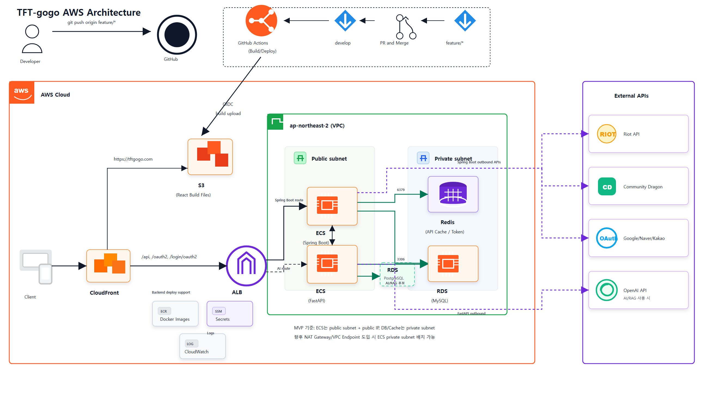
React, Spring Boot, FastAPI, MySQL, Redis, PostgreSQL/pgvector, Riot API, OpenAI API 연결 흐름을 정리합니다.
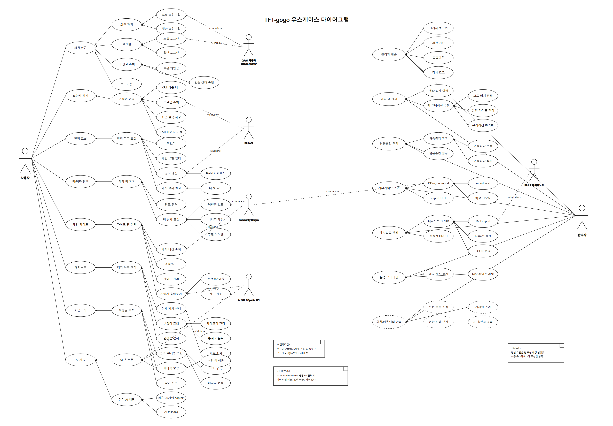
비회원, 로그인 사용자 기준으로 전적 검색, 메타덱 조회, 게임 가이드, AI 추천 흐름을 구분합니다.
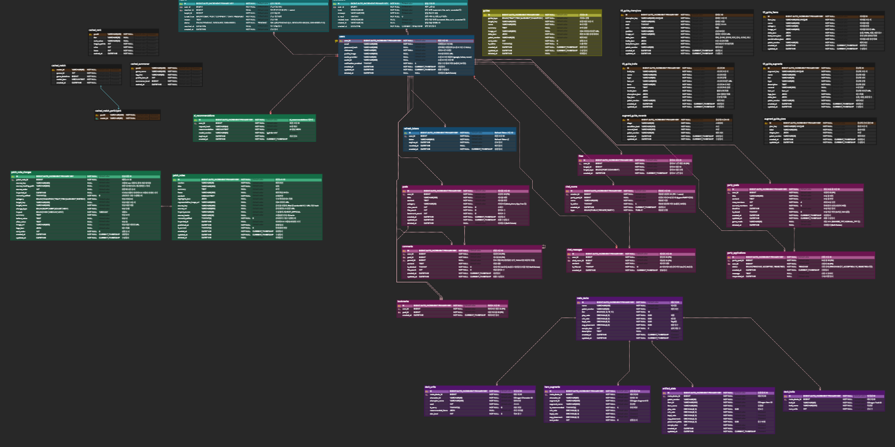
소환사 전적, 매치 상세, 메타덱, 게임 가이드, AI 추천, 회원 정보를 도메인별로 분리해 저장 기준을 잡았습니다. Riot API 데이터를 그대로 화면에 넘기기보다 반복 조회되는 데이터와 추천에 필요한 데이터를 구분해 테이블 관계를 설계했습니다.
Features
Riot API 기반으로 최근 경기, 순위, 챔피언·아이템 정보를 조회합니다.

덱 구성, 승률, 평균 등수, 픽률을 한 화면에서 비교할 수 있게 구성했습니다.

시너지, 아이템, 증강체, 챔피언 정보를 기준 패치에 맞춰 조회합니다.


최근 전적과 메타 데이터를 바탕으로 맞춤 덱을 추천합니다.
Spec & Harness
01 / Spec
기능을 바로 구현하지 않고 요청값, 응답 필드, 실패 응답, DB 상태 변화를 먼저 적었습니다. 이 기준을 Claude에 함께 전달해 AI가 임의로 구조를 바꾸거나 실패 케이스를 빠뜨리지 않게 했습니다.
02 / Claude
/claude로 구현 범위, 수정 금지 영역, 테스트 명령을 함께 넘겼습니다. 단순히 코드를 생성시키는 것이 아니라, 정해진 스펙 안에서만 수정하도록 작업 환경을 만들었습니다.
03 / Codex Review
PR에서는 @codex 리뷰를 요청해 정상 동작보다 실패 경로, 동시 요청, 누락 테스트를 먼저 확인했습니다. 리뷰 후에는 같은 테스트 명령으로 재검증하고 빌드 성공 여부까지 확인한 뒤 병합했습니다.
Release Management
01 / Requirement
전적 검색, 메타 분석, AI 추천, 게임 가이드 범위를 문서로 정리했습니다.
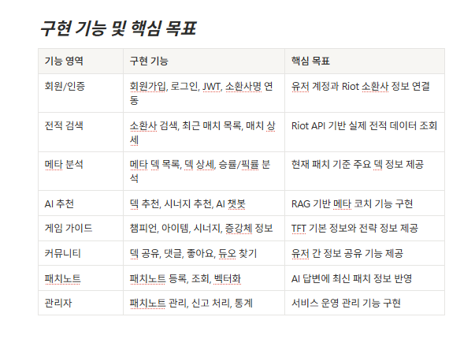
02 / Issue & PR
작업 성격을 라벨로 나누고 PR과 이슈를 연결해 변경 이력을 남겼습니다.
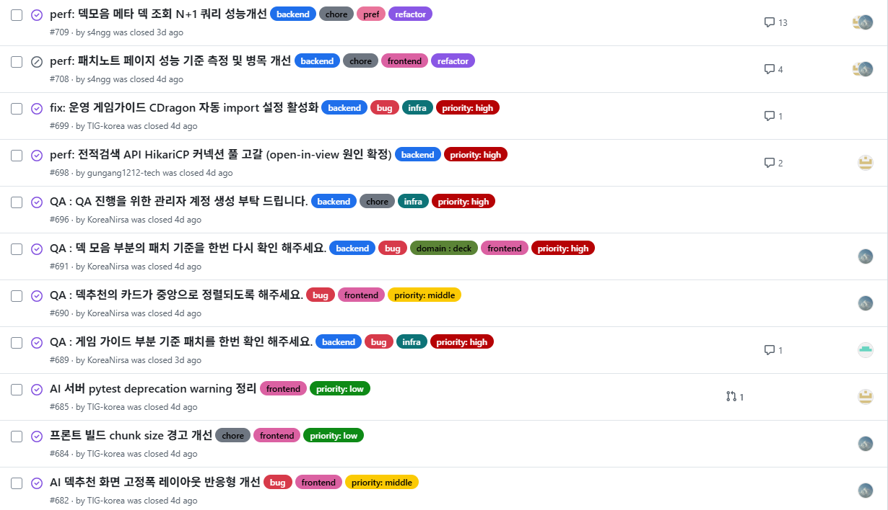
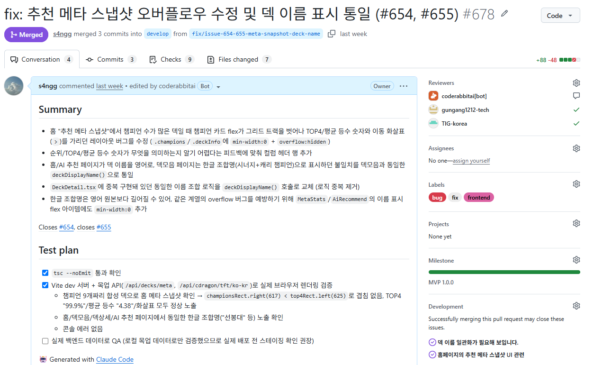
03 / API & Integration
Riot API, Community Dragon, FastAPI 추천 서버 연동 범위를 나눴습니다.
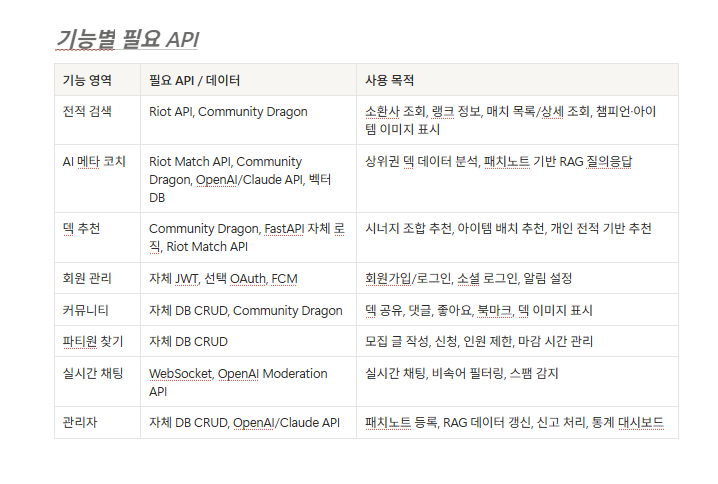
04 / Release
기능 추가, 버그 수정, 성능 개선 내용을 릴리즈 노트로 정리했습니다.
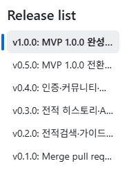
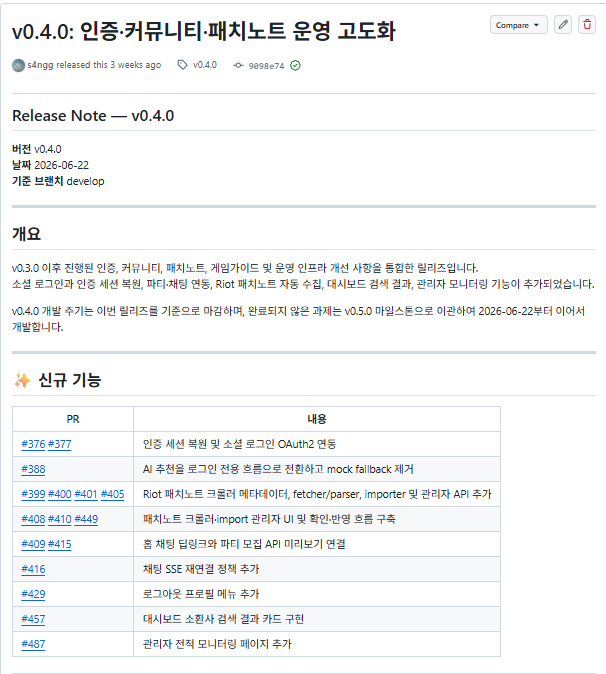
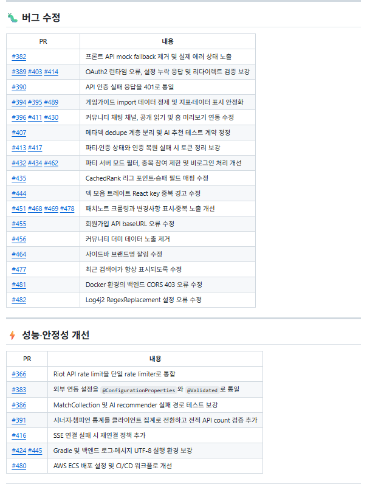
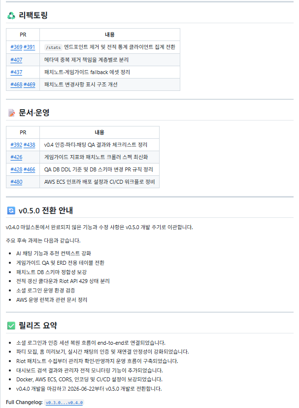
05 / Review Harness
AI 리뷰로 병합 전 위험을 확인하고 수정 반영 여부를 재검토했습니다.
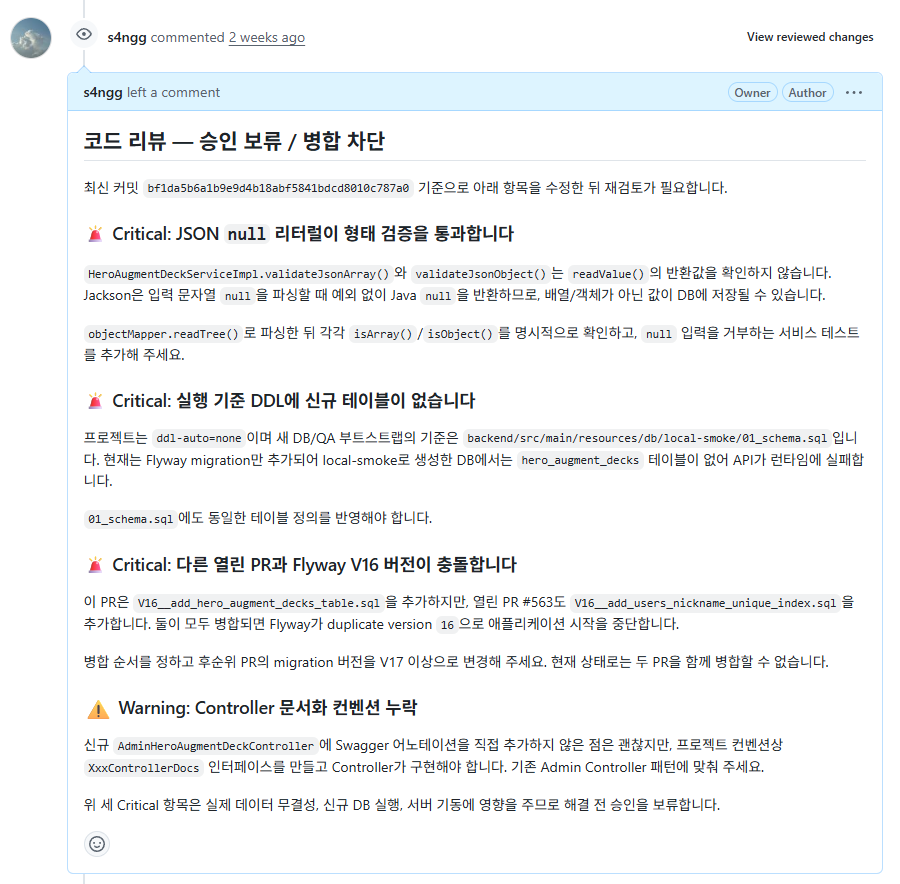
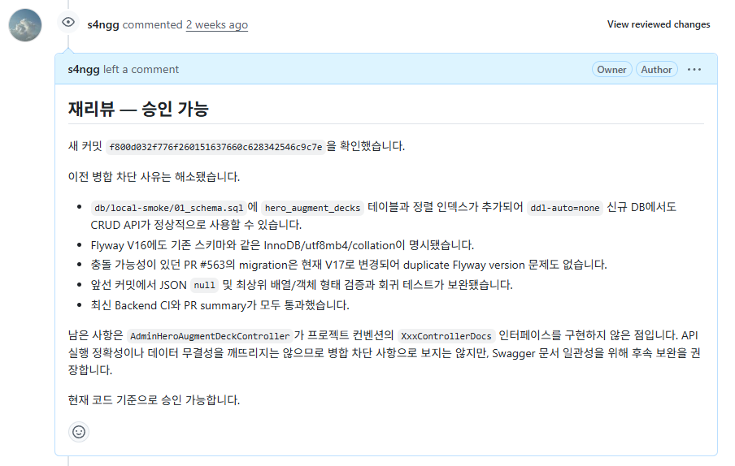